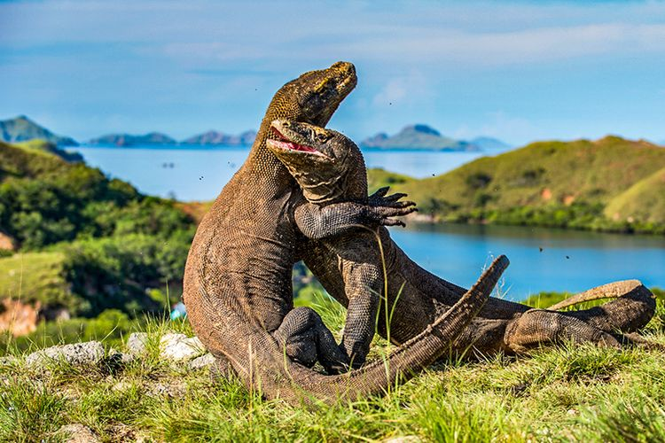

WISATA PULAU KOMODO
Pulau Komodo sudah terkenal hingga mancanegara.
Pulau Komodo merupakan bagian dari Taman Nasional Komodo yang menarik banyak perhatian wisatawan.
Di pulau ini hidup spesies kadal terbesar di dunia yang sangat dilindungi.
Pulau Komodo merupakan pulau terbesar yang ada di kawasan Taman Nasional Komodo.
Wisata Pulau Komodo menawarkan eksotisme alam yang mengagumkan. Meski sempat direncanakan akan ditutup,
wisata Pulau Komodo masih menjadi destinasi favorit wisatawan.
Tak hanya mengunjungi habitat komodo, di wisata Pulau Komodo kamu akan disuguhkan ragam panorama indah.
Di wisata Pulau Komodo kamu bisa menemukan padang sabana dan perbukitan yang memesona.
Pulau-pulau sekitarnya pun sangat menarik untuk dikunjungi.

- Rute dan Akses Lokasi
Lokasi kawasan wisata Taman Nasional Pulau Komodo ini adalah di Kecamatan Komodo, Kabupaten Manggarai Barat, Nusa Tenggara Timur.
Adapun rute menuju lokasi wisata jika ditempuh dari kota Surabaya adalah dari Tol Surabaya menuju Gempol.
Setelah itu menuju Bangil – Pasuruan. Selanjutnya anda akan melewati Probolinggo hingga Situbondo.
Dari situ ambil arah menuju Banyuwangi lalu Pelabuhan Ketapang.
Di pelabuhan tersebut anda dapat naik kapal feri menuju Pelabuhan Gilimanuk, Negara dan terakhir sampai di Denpasar.
- Harga Tiket
Biaya yang dikeluarkan tiap pengunjung untuk masuk ke Taman Nasional Komodo sebesar Rp 5.000. Tiket ini berlaku per hari.
Dan adapun tiket untuk Jasa Pemanduan KSU TN Komodo biayanya sebesar Rp 80.000,
tiket ini berlaku untuk satu grup sebanyak lima orang dalam sekali perjalanan.
- Fasilitas dan Akomodasi
Untuk kebutuhan akomodasi penginapan, di Labuan Bajo banyak terdapat tempat-tempat penginapan, Hotel ataupun Resort.
Bahkan, beberapa penginapan memiliki fasilitas-fasilitas terbaik dengan letak yang sangat strategis atau menghadap ke Laut.
Salah satunya yaitu Bintang Flores Hotel, terletak di JL. Pantai Pede, Labuan Bajo.
Hotel mewah di Pulau Komodo ini menawarkan kemewahan dan kenyamanan yang sepenuhnya.

- Tips Saat ke Pulau Komodo
Anda mesti sarapan sebelum berangkat, dan membawa air minum sendiri. Jika takut lapar, Anda bisa membawa bekal makanan, seperti nasi dan lauk pauk sebelum menyambangi pulau komodo.
Namun ada baiknya Anda tidak membawa daging, karena komodo adalah hewan karnivora yang memiliki penciuman yang tajam.
Sebisa mungkin Anda harus berada di sekitar pemandu, jaga jarak dengan Komodo, jangan membuat gerakan tiba-tiba dan berteriak.Meski komodo adalah pelari yang hebat, tapi mereka hanya bisa berlari lurus. Jadi, jika memang pada akhirnya Anda dikejar oleh mereka, kuasailah teknik berlari zig-zag.
Mengingat bahwa penglihatan mereka tak bagus, kalau masih dikejar juga maka cari tempat lebih tinggi dan naiklah ke atasnya.